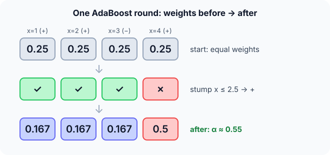

Prerequisites
- Decision trees, especially one-split "stumps".
- Natural log and exponential.
- Random forests, to compare ensembles.
The analogy
Everyday analogy
Think of a teacher reviewing an exam with a class. After each round, the questions most students got wrong get more time in the next lesson.
AdaBoost does that with data points. After each weak rule, the misclassified points get heavier weights, so the next rule pays more attention to them. The final answer is a weighted vote of all the rules.
How it works
Setup: labels are $+1$ or $-1$; every point starts with weight $1/n$; each round trains a weak learner (usually a decision stump) on the weighted data.
Start with one boosting round by hand
Points $x = 1, 2, 3, 4$ with labels $+1, +1, -1, +1$, weights $1/4$ each. Stump: predict $+1$ if $x \le 2.5$, else $-1$. Predict, then open "Check".
Example: predict before you read
Step 1. Which points does the stump get wrong, and what is its weighted error ε?
Check
Only point 4 (true +1, predicted −1). ε = 0.25.
Step 2. Cover the next line and guess: the stump's weight $\alpha = \tfrac12 \ln\frac{1 - \varepsilon}{\varepsilon}$.
Check
$\tfrac12 \ln 3 \approx 0.549$.
Step 3. Update: multiply correct points by $e^{-\alpha} \approx 0.577$ and wrong points by $e^{\alpha} \approx 1.732$, then normalise. Predict the new weights.
Check
Before normalising: 0.144, 0.144, 0.144, 0.433 (sum 0.866). After: 0.167, 0.167, 0.167, 0.5. Point 4 now carries half the weight.

Quick recall: Before reading further, cover the text above and say out loud: what happens to the weight of a misclassified point?
Check your answer
It is multiplied by $e^{\alpha}$, so it grows, and after normalising it takes a bigger share.
Finish the picture: the next round
With weights 0.167, 0.167, 0.167, 0.5, consider the stump "$x \le 3.5$ → −, else +".
- Its weighted error. Predict which points it gets wrong and ε.
Check
It misclassifies points 1 and 2 (true +): ε = 0.167 + 0.167 = 0.333. It correctly handles the heavy point 4.
- Its say. Predict $\alpha$.
Check
$\tfrac12 \ln(0.667/0.333) = \tfrac12 \ln 2 \approx 0.347$. The final model is the sign of $0.549\,h_1(x) + 0.347\,h_2(x) + \dots$
Quick recall: Without scrolling up, say out loud: why does a stump with error 0.5 get $\alpha = 0$?
Check your answer
It is no better than a coin flip, so its vote carries no information: $\ln(0.5/0.5) = 0$.
Full worked calculation
Two complete rounds on the four points $x = 1, 2, 3, 4$ with labels $+, +, -, +$, then the final weighted vote, including the point the model still gets wrong.
| Point | Label | Start weight | After round 1 | After round 2 | Final score $F(x)$ | Prediction |
|---|---|---|---|---|---|---|
| 1 | + | 0.25 | 0.167 | 0.25 | +0.203 | + ✓ |
| 2 | + | 0.25 | 0.167 | 0.25 | +0.203 | + ✓ |
| 3 | − | 0.25 | 0.167 | 0.125 | −0.896 | − ✓ |
| 4 | + | 0.25 | 0.5 | 0.375 | −0.203 | − ✗ |
-
1Round 1: weighted error of stump 1
$$h_1: x \le 2.5 \to +, \text{ else } - \qquad \varepsilon_1 = w_4 = 0.25$$The stump gets points 1, 2, 3 right and point 4 wrong. The error is the sum of the weights of the wrong points, not their count.
-
2Round 1: the stump's say
$$\alpha_1 = \tfrac12 \ln\frac{1 - \varepsilon_1}{\varepsilon_1} = \tfrac12 \ln 3 \approx 0.549$$A stump with 25% error is clearly better than chance (50%), so it gets a positive say. At $\varepsilon = 0.5$, $\alpha$ would be 0; the smaller the error, the larger the say.
-
3Round 1: reweight and normalise
$$\text{right: } 0.25 \cdot e^{-0.549} = 0.144, \quad \text{wrong: } 0.25 \cdot e^{0.549} = 0.433, \quad \text{sum} = 0.866 \;\Rightarrow\; [0.167, 0.167, 0.167, 0.5]$$Dividing by 0.866 makes the weights add up to 1 again. Point 4 now holds half of all the weight, so the next stump cannot ignore it.
-
4Round 2: stump 2 and its error
$$h_2: x \le 3.5 \to -, \text{ else } + \qquad \varepsilon_2 = w_1 + w_2 = 0.167 + 0.167 = 0.333$$Stump 2 gets the heavy point 4 right, which is what the reweighting pushed for. It misclassifies points 1 and 2, but they only weigh 1/3 together.
-
5Round 2: say and new weights
$$\alpha_2 = \tfrac12 \ln 2 \approx 0.347; \quad \text{wrong} \times 1.414, \text{ right} \times 0.707, \text{ sum } 0.943 \;\Rightarrow\; [0.25, 0.25, 0.125, 0.375]$$After every round the misclassified points hold exactly half the total weight. On the new weights the last stump looks like a coin flip, so the next one must find something new.
-
6Final weighted vote
$$F(x) = 0.549\,h_1(x) + 0.347\,h_2(x): \quad F(1) = 0.549 - 0.347 = +0.203, \quad F(3) = -0.549 - 0.347 = -0.896, \quad F(4) = -0.549 + 0.347 = -0.203$$The prediction is the sign of $F$. Points 1–3 are correct. Point 4 is still wrong, because stump 1 (which is wrong on it) has the bigger say. A third round would focus even harder on point 4.
What the numbers tell us
Each round is: weighted error $\varepsilon$, say $\alpha = \tfrac12\ln\frac{1-\varepsilon}{\varepsilon}$, multiply wrong weights by $e^{\alpha}$ and right ones by $e^{-\alpha}$, normalise.
After two rounds training accuracy is 3/4; more rounds keep adding stumps until the weighted vote gets every point right or the error stops improving.
The rule in plain words
Start with equal weights. Each round: fit a weak learner on the weighted data, compute its weighted error ε and its say $\alpha = \tfrac12\ln\frac{1 - \varepsilon}{\varepsilon}$.
Increase the weights of misclassified points, decrease the others, normalise. Predict with the sign of $\sum_t \alpha_t h_t(x)$.
Quick recall: Before you read the code, describe one AdaBoost round in your own words. Then check below.
Check your answer
Add up the weights of the misclassified points to get ε, compute $\alpha$ from it, multiply wrong points' weights by $e^{\alpha}$ and right ones by $e^{-\alpha}$, then rescale so the weights sum to 1.
The code
Read this code after you have done the round by hand. It will make more sense.
double adaboost_round(double w[], int correct[], int n) { /* returns alpha; updates w */
double err = 0, sum = 0;
for (int i = 0; i < n; i++) if (!correct[i]) err += w[i]; /* weighted error */
double alpha = 0.5 * log((1 - err) / err); /* the learner's say */
for (int i = 0; i < n; i++) {
w[i] *= exp(correct[i] ? -alpha : alpha); /* up-weight mistakes */
sum += w[i];
}
for (int i = 0; i < n; i++) w[i] /= sum; /* normalise to 1 */
return alpha;
}Definition
What you just did, in one line: AdaBoost builds a strong classifier as a weighted vote of weak learners trained in sequence, each on data re-weighted to emphasise the previous learners' mistakes.
flowchart TD
A["equal weights 1/n"] --> B["train a stump on the weighted data"]
B --> C["error ε, say α = ½ ln((1 − ε)/ε)"]
C --> D["up-weight mistakes, down-weight correct points"]
D --> E{"enough rounds?"}
E -->|no| B
E -->|yes| F["predict sign of Σ α·h(x)"]
How costly is it?
Quick recall: Before looking at the formula, predict: how is the final prediction formed?
Check your answer
As the sign of the weighted sum of all stumps' votes, each weighted by its $\alpha$.
The say of each learner and the weight update, with $y_i, h(x_i) \in \{-1, +1\}$:
$$\alpha_t = \tfrac12 \ln\frac{1 - \varepsilon_t}{\varepsilon_t}, \qquad w_i \leftarrow \frac{w_i \, e^{-\alpha_t y_i h_t(x_i)}}{Z_t}, \qquad H(x) = \operatorname{sign}\Big(\sum_t \alpha_t h_t(x)\Big)$$| Phase | Cost | Why |
|---|---|---|
| Training | $T$ × (one weak learner) | Rounds are sequential, not parallel |
| Weight update | $O(n)$ per round | One pass over the points |
| Prediction | $O(T)$ stumps | Weighted vote of all learners |
Best for: clean, moderately sized classification problems where simple weak learners (stumps) can each capture part of the signal.
- Pro: Turns very simple learners into a strong model.
- Pro: Few hyperparameters (number of rounds, learner depth).
- Con: Sensitive to noisy labels and outliers, which get ever larger weights.
- Con: Sequential training can't be parallelised across rounds.
Warning
Mislabelled points keep being "wrong", so their weights grow round after round, and later learners waste effort on noise. With noisy labels, limit the rounds or prefer gradient boosting with a robust loss.
Exam tip
Exams give the weighted error and ask for $\alpha$ and the new weights. Remember: wrong × $e^{\alpha}$, right × $e^{-\alpha}$, then normalise; after normalising, the misclassified points always hold exactly half of the total weight.
Common mistakes
- Forgetting to normalise the weights after updating.
- Using an unweighted error instead of the sum of the misclassified points' weights.
- Confusing AdaBoost (re-weights points) with gradient boosting (fits residuals).
Try it yourself
Exercise 1 (warm-up)
A learner has weighted error ε = 0.1. Compute its say $\alpha$.
Hint
$\ln 9 \approx 2.197$.
Answer
$\alpha = \tfrac12 \ln 9 \approx 1.10$: an accurate learner gets a big say.
Exercise 2 (a bit harder)
Five points with equal weights 0.2; a stump misclassifies two of them. Compute ε, $\alpha$ and the new weights. Write your answer down before you open it.
Show answer
ε = 0.4, $\alpha = \tfrac12 \ln 1.5 \approx 0.203$. Unnormalised: right $0.2 e^{-0.203} \approx 0.163$ (×3), wrong $0.2 e^{0.203} \approx 0.245$ (×2); sum ≈ 0.980. New weights ≈ 0.167 (right) and 0.25 (wrong); the two wrong points now hold half the weight.
Did you know?
Did you know?
Freund and Schapire introduced AdaBoost in 1995 and received the Gödel Prize in 2003; the Viola–Jones face detector (2001), in early digital cameras, used AdaBoost on simple rectangle features.
After normalising, misclassified points always hold exactly 50% of the weight, so the next learner faces a problem on which the previous one is no better than chance.
Key points to remember
If you remember one thing from each line, remember the because.
- Mistakes get heavier because their weights are multiplied by $e^{\alpha} > 1$.
- Accurate learners get a bigger say because $\alpha$ grows as ε shrinks.
- A coin-flip learner gets $\alpha = 0$ because its vote carries no information.
- Training is sequential because each round depends on the previous round's weights.
- Noisy labels hurt because wrong labels keep gaining weight.
Self-check questions
Answer these in order, out loud. They follow the page, so your answers become the script of your video.
- How is AdaBoost like a teacher reviewing the hardest exam questions?
Sample answer
After each round, the questions most people got wrong get more attention next time, just as misclassified points get more weight.
- Do one AdaBoost round on labels $+, +, -, +$ with the stump "$x \le 2.5$ → +".
Sample answer
Only point 4 is wrong, ε = 0.25, $\alpha \approx 0.549$; new weights 0.167, 0.167, 0.167, 0.5.
- Why does the code divide every weight by
sumat the end?A good answer mentions what the error must mean.
Sample answer
So the weights sum to 1 again; the next round's weighted error must be a proportion between 0 and 1.
- So what is AdaBoost, in one sentence?
Sample answer
A boosting method that trains weak learners in sequence on re-weighted data and combines them in a weighted vote.
- Why does $\alpha$ depend on the error the way it does?
A good answer checks ε = 0.5 and ε → 0.
Sample answer
At ε = 0.5 the learner is useless and $\alpha = 0$; as ε approaches 0, $\alpha$ grows without limit, so reliable learners dominate the vote.
- What does AdaBoost cost to train and to predict?
Sample answer
Training is $T$ sequential rounds, each one weak learner plus an $O(n)$ update; prediction evaluates all $T$ learners.
- Give two pros and two cons.
Sample answer
Pros: makes weak learners strong, few hyperparameters. Cons: sensitive to label noise, sequential training.
- If you had to teach this to a friend in 2 minutes, what would you leave out, and why?
Sample answer
I'd leave out the exponential-loss view and the 50% property. I'd keep the teacher analogy, the one-round weight calculation, and "re-weight mistakes, weighted vote of stumps".
External resources
- scikit-learn: AdaBoost: classifier and regressor with examples.
- Wikipedia: AdaBoost: algorithm, history and analysis.
- GeeksforGeeks: AdaBoost from scratch: a full worked implementation.
Videos
- YouTube search: StatQuest AdaBoost: StatQuest's AdaBoost walkthrough.